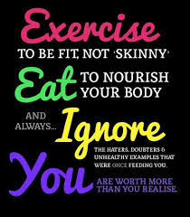

1. Jumping rope
When was the last time you jumped rope? Perhaps in your childhood. Jumping rope is a cheap and easily portable exercise that you can do almost anywhere. This workout burns more calories per minute than any other workout. Get jumping for a perfect exercise and plenty of fun. One of the best things about jumping rope is that you can do it with your kids. Moreover, jumping rope is a fantastic way to fit in a highly effective cardio session when you are on the go. Simply toss your jumping rope in your carry-on and you don’t need to look for the nearest gym. So, who said jumping rope is only for kids?
2. Squats
The squat is a compound, full-body exercise that works more than one muscle group. This powerful exercise helps tone your glutes, strengthen your body and burn a lot of calories. To boost your calorie expenditure and raise your heart rate, you can try to do jump squats. Or stay in a squat hold with dumbbells in the hands to increase the resistance as well as feel the burn. Doing squats regularly is one of the best ways to transform your body as well as improve your physical health. If you sit all day at work or at home, you are at higher risk of serious disease. Why not do several squats whilst waiting for your dinner to cook, the kettle to boil, or your PC to boot up? Sometimes multitasking is a great thing!
3. Pushups
Unfortunately, many people avoid doing pushups since this exercise is a bit harder to perform, but it can do wonders for your body. There are plenty of different pushups that work the different muscles in the shoulders and arms. Try to vary your pushup style to lower your risk of becoming bored with exercise. Not only do pushups work the upper body, but also work the core. Do pushups a few days a week to help sculpt the arms and overall transform the body. Plus, pushups are good for your heart and cardiovascular health and this exercise helps to improve your posture. Just make sure you do them correctly – learn to do pushups with your back straight to reduce back pain and avoid straining your back.
4. Lunges
To tone the muscles in your legs try doing lunges. Lunges give you such amazing results because they isolate every leg individually, helping transform your body. To add some cardio and boost the intensity, do some jump lunges. I suggest you to do 3 sets of 10 lunges a day for the best results. Since lunges are a very effective workout for strengthening, sculpting and building a few muscle groups, why not do them every day? Even if you have a super busy schedule, you can still find time to do several lunges. Stop making excuses and start exercising to transform your body today.
5. Swimming
The great news for all lovers of swimming and for those who are trying to transform their bodies – swimming is a super effective workout that will bring you astonishing results. Swimming helps strengthen your core and work different muscle groups. Swimming boasts numerous health benefits. It helps to reduce your blood pressure, strengthen your heart and improve your aerobic capacity. Plus, swimming is a wonderful way for your family to get moving and have plenty of fun together. Though, this exercise is not as portable as jumping rope.
6. Running
There are many benefits of running. It helps to relieve stress, improve your heart health, reduce the risk of depression, burn mega calories and improve your overall health. Running can actually transform the body like nothing else. It builds strong, toned legs and makes them look thinner. I enjoy running, especially early in the morning, and I think it’s one of the best exercises to do every day. I always feel a great sense of accomplishment after my run. If you don’t feel like running, try jogging. Not only does jogging help to burn calories, it also helps to improve your overall health.
7. Cycling
A cycling workout is a foolproof way to get a great sweat and work your legs. Cycling is a wonderful exercise since you can push yourself at a higher intensity. It strengthens your legs, arms and back, encourages your heart to work more efficiently and aids in weight loss. Cycling is also one of the easiest ways to fit exercise into your everyday routine since it’s a great means of transportation. It gets you fit, saves you money, and is good for your health. Bring along your significant other or friend, or cycle solo, and ensure you get the most out of your workout.